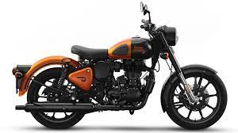
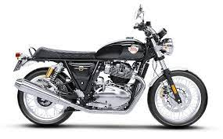
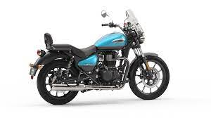

| Address | Links | Follow Us |
|---|---|---|
| Royal Enfield Brand Stores New No 9, Old No 3, Devi Kripa, Besant Avenue Road, Adyar, Besant Nagar, Chennai -600020 |
|
|

Classic 350 |
Royal Enfield Classic 350 is a cruiser bike available at a starting price of Rs. 1,84,374 in India. It is available in 5 variants and 11 colours with top variant price starting from Rs. 2,15,118. The Royal Enfield Classic 350 is powered by 349cc BS6 engine which develops a power of 20.2 bhp and a torque of 27 Nm.
|
|
The Royal Enfield Interceptor 650 is a parallel twin retro-styled motorcycle introduced by Royal Enfield in 2018. It is the first modern twin cylinder motorcycle developed by the company. In 2017, the company revealed a new motorcycle which revived the classic Royal Enfield 1960s name, "Interceptor"
|

Intercept |
|

Meteor |
The Meteor is an Indian Cruiser-style motorcycle manufactured by Royal Enfield in India. The model was developed by engineers based at Royal Enfield’s two state-of-the-art technical centres, in Chennai. The Meteor is a direct replacement to Thunderbird 350.
|